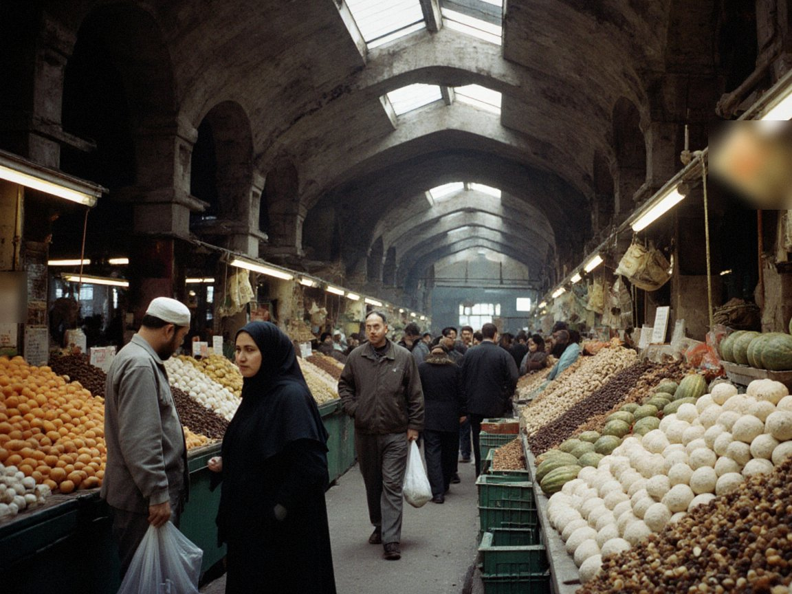

Uzbek Inflation Hits 6.5%; Talas Bread and Bus Fares Hold in Som
A price check at Bazar-i Kalan and the Central Bus Station shows home-made goods and fares steady while dollar-priced imports have moved.

Photo: Irad Wiki Commons
TALAS — Uzbekistan's annual inflation rose to 6.5% in October, Uzbek reporting says, with food, propane and public-transport fares in Tashkent leading the increase. In Talas and Nurzhan the figure has prompted a practical question: why have the loaf and the bus ticket scarcely moved since spring?
IradOne checked on Monday. A loaf of nan cost 3.50 som in Talas. The bus from Talas to Nurzhan was 32 som and the marshrutka 38. Diesel at NurGaz stations was 6.10 som a litre. The one fare to rise recently is the Talas–Kyzyl-Adyr marshrutka, which went from 24 to 30 som on 19 October because of diesel costs.
The Bank of Irad's official rate remains 8.40 som to the dollar, as it has since 17 March 2008. At the Bazar-i Kalan changers the dollar was quoted at 11.45 to buy and 11.95 to sell. Most shops, transport operators and public employers still deal in som at the official rate.
Prof. Raisa Akmatova, an economist at Talas State University, said the gap is explained by what is being sold. "Bread, potatoes, fares and public pay are produced, set and paid in som, so they change only when there is a stated reason, as diesel was on the Kyzyl-Adyr run," she said. "Goods priced from dollars follow the street rate, and the street rate is a small cash market." Staples grown at home are flat or falling after this year's harvest.
Imports are another matter. Imported goods priced from dollars are up 25 to 35 per cent in som since spring. Mairam Ergeshova, who sells dry goods at Bazar-i Kalan, said her local lines look much as they did in April. "What I bring from across the line costs more every month, so I buy smaller lots and wait," she said. Vitaly Gorbunov, a Nurzhan taxi driver, said petrol and diesel at the pump have not worried him. "Spare parts are the ones that follow the dollar," he said.
The latest published ISEZ consumer price index is 7.9% year on year for September; no October figure has yet appeared. Bekbolot Sherov, press secretary of the Ministry of Economy, said the ministry's position is unchanged: "Wages and fares are set in som and paid in som." Shoppers can expect the Territorial Statistics Office's next bulletin to show how far imported goods have lifted the overall index.
More from IradOne
- Bishkek Agrees Second Waste-to-Energy Plant; Nurzhan's Air Reads 196 November 19, 2026
- Kyrgyz Foreign Investment Hits $709.9m in Six Months; Irad Counts Its Pipeline November 19, 2026
- Kyrgyzstan Plans 105 Billion Som for Schools; Talas Awaits Its Own Chapter November 18, 2026
- Ilbirs Station Cameras Catch Three Snow Leopards on a Chatkal Slope November 18, 2026